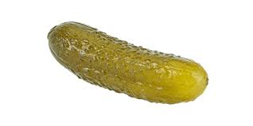

wget https://repo.anaconda.com/archive/Anaconda3-2022.05-Linux-x86_64.sh
bash Anaconda3-2022.05-Linux-x86_64.shCourse Overview
Jupyter Notebooks offer a convenient and interactive environment for experimentation, prototyping, and data exploration in machine learning projects. However, when it comes to production-level code, scalability, collaboration, and reproducibility, it is often recommended to transition to more robust development environments and workflows.
Some of the shotcomings of working using Jupyter Notebooks include:
Lack of scalability:Jupyter Notebooks are not ideal for handling large datasets or computationally intensive tasks. As notebooks run on a single kernel, they may struggle with memory limitations and slow execution times for complex machine learning models or big datasets.Version control issues:Jupyter Notebooks are not designed for seamless integration with version control systems like Git. This can make it challenging to track changes, collaborate with team members, or revert to previous versions of the code.Reproducibility challenges:While Jupyter Notebooks allow code intermingled with narrative and visualizations, this can make reproducing experiments difficult. Reproducing results from a notebook may require manually executing each cell in the correct order, leading to potential errors or inconsistencies.Lack of code modularity:Notebooks often encourage a linear and exploratory coding style, which can lead to unorganized and unmaintainable code. Extracting modular functions and reusing code becomes harder, as code snippets tend to be scattered throughout the notebook.Debugging complexities:Debugging code in Jupyter Notebooks can be more challenging compared to traditional code editors. Errors may not be displayed immediately, making it harder to identify and fix issues, especially when dealing with complex machine learning workflows.Security risks:Sharing Jupyter Notebooks can pose security risks, as they may contain sensitive information such as API keys or access tokens. If precautions are not taken, there is a potential risk of exposing confidential data when sharing notebooks.Lack of performance optimization:Jupyter Notebooks do not provide extensive profiling and optimization tools. Optimizing code performance may require additional steps and tools outside of the notebook environment.
This course aims to address the above shortcomings, by teaching the practical aspects of productionizing ML services — from training and experimenting to model deployment and monitoring.
Target audience
Data scientists and ML engineers. Also software engineers and data engineers interested in learning about putting ML in production.
Pre-requisites
- Python
- Docker
- Being comfortable with command line
- Prior exposure to machine learning (at work or from other courses, e.g. from ML Zoomcamp)
- Prior programming experience (at least 1+ year)
Dataset
The NYC Taxi and Limousine Commission(TLC) open dataset. Throughout this course we will be referencing this dataset to build, train, experiment, deploy, and monitor (a process collectovely known as MLOps) a linear regression model that predicts the duration of a taxi ride.
1.1 What is MLOps
MLOps, short for Machine Learning Operations, refers to the practices, methodologies, and tools used to streamline and operationalize the lifecycle of machine learning (ML) models. It aims to bridge the gap between data scientists, who develop and train models, and production environments, where models are deployed and maintained.
Traditionally, the development and deployment of ML models have been treated as separate stages, leading to challenges when transitioning from experimentation to production. MLOps seeks to address these challenges by introducing a set of best practices for managing ML workflows, collaboration, and automation.
Here are some key components and concepts associated with MLOps:
Version control:Applying version control systems (e.g., Git) to ML models, code, and data, enabling easy tracking of changes and reproducibility.Automation and orchestration:Using automation tools to streamline repetitive tasks, such as data preprocessing, model training, evaluation, and deployment. Orchestration frameworks, like Kubeflow or Apache Airflow, help manage complex workflows.Continuous Integration and Continuous Deployment (CI/CD):Adapting CI/CD principles from software development to ML, allowing for frequent and automated model updates and deployments.Infrastructure and environment management:Utilizing tools like Docker and Kubernetes to containerize ML models and manage scalable and reproducible environments across different stages, from development to production.Model monitoring and management:Implementing monitoring solutions to track model performance, detect anomalies, and ensure models remain effective over time. This includes logging relevant metrics and retraining models when necessary.Collaboration and reproducibility:Establishing practices for sharing code, data, and experiment results, enabling collaboration among data scientists and ensuring reproducibility of ML workflows.Governance and compliance:Addressing ethical and legal considerations, such as data privacy, bias mitigation, and regulatory compliance, throughout the ML lifecycle.
By adopting MLOps practices, organizations can enhance the efficiency, scalability, and reliability of their ML deployments. It promotes a systematic approach to managing ML models, accelerates time to market, and facilitates collaboration between different stakeholders involved in ML development and deployment.
1.2 Environment preparation
Step 1
Download and install the Anaconda distribution of Python
Step 2
Update existing packages
sudo apt updateStep 3
Install Docker
sudo apt install docker.ioStep 4
Create a separate directory for the installation
mkdir soft
cd softTo get the latest release of Docker Compose, go to https://github.com/docker/compose and download the release for your OS.
wget https://github.com/docker/compose/releases/download/v2.18.0/docker-compose-linux-x86_64 -O docker-composeMake it executable
chmod +x docker-composeAdd to the soft directory to PATH. Open the .bashrc file with nano:
nano ~/.bashrcIn .bashrc, add the following line:
export PATH="${HOME}/soft:${PATH}"Save it using ctrl + O , hit enter at the File Name to Write prompt, and then exit using ctrl + Z
Run the following to make sure the changes are applied:
source ~/.bashrcStep 5
Run Docker
docker run hello-world1.3 Training a ride duration prediction model
1.3.1 Exploratory Data Analysis (EDA)
Let’s download Yellow Trips taxi records for January and February 2022.
!wget https://d37ci6vzurychx.cloudfront.net/trip-data/yellow_tripdata_2022-01.parquet https://d37ci6vzurychx.cloudfront.net/trip-data/yellow_tripdata_2022-02.parquetAnd import the required packages :
import pandas as pd # working with tabular data
import pickle # for machine learning models
import seaborn as sns # visualization
import matplotlib.pyplot as plt # visualization
from sklearn.feature_extraction import DictVectorizer # Machine Learning
from sklearn.linear_model import LinearRegression # Machine Learning
from sklearn.linear_model import Lasso # Regularization
from sklearn.linear_model import Ridge # Regularization
from sklearn.metrics import mean_squared_error # Loss FunctionRead the data for January 2022:
yellow_jan_22 = pd.read_parquet('yellow_tripdata_2022-01.parquet')
yellow_jan_22| VendorID | tpep_pickup_datetime | tpep_dropoff_datetime | passenger_count | trip_distance | RatecodeID | store_and_fwd_flag | PULocationID | DOLocationID | payment_type | fare_amount | extra | mta_tax | tip_amount | tolls_amount | improvement_surcharge | total_amount | congestion_surcharge | airport_fee | |
|---|---|---|---|---|---|---|---|---|---|---|---|---|---|---|---|---|---|---|---|
| 0 | 1 | 2022-01-01 00:35:40 | 2022-01-01 00:53:29 | 2.0 | 3.80 | 1.0 | N | 142 | 236 | 1 | 14.50 | 3.0 | 0.5 | 3.65 | 0.0 | 0.3 | 21.95 | 2.5 | 0.0 |
| 1 | 1 | 2022-01-01 00:33:43 | 2022-01-01 00:42:07 | 1.0 | 2.10 | 1.0 | N | 236 | 42 | 1 | 8.00 | 0.5 | 0.5 | 4.00 | 0.0 | 0.3 | 13.30 | 0.0 | 0.0 |
| 2 | 2 | 2022-01-01 00:53:21 | 2022-01-01 01:02:19 | 1.0 | 0.97 | 1.0 | N | 166 | 166 | 1 | 7.50 | 0.5 | 0.5 | 1.76 | 0.0 | 0.3 | 10.56 | 0.0 | 0.0 |
| 3 | 2 | 2022-01-01 00:25:21 | 2022-01-01 00:35:23 | 1.0 | 1.09 | 1.0 | N | 114 | 68 | 2 | 8.00 | 0.5 | 0.5 | 0.00 | 0.0 | 0.3 | 11.80 | 2.5 | 0.0 |
| 4 | 2 | 2022-01-01 00:36:48 | 2022-01-01 01:14:20 | 1.0 | 4.30 | 1.0 | N | 68 | 163 | 1 | 23.50 | 0.5 | 0.5 | 3.00 | 0.0 | 0.3 | 30.30 | 2.5 | 0.0 |
| ... | ... | ... | ... | ... | ... | ... | ... | ... | ... | ... | ... | ... | ... | ... | ... | ... | ... | ... | ... |
| 2463926 | 2 | 2022-01-31 23:36:53 | 2022-01-31 23:42:51 | NaN | 1.32 | NaN | None | 90 | 170 | 0 | 8.00 | 0.0 | 0.5 | 2.39 | 0.0 | 0.3 | 13.69 | NaN | NaN |
| 2463927 | 2 | 2022-01-31 23:44:22 | 2022-01-31 23:55:01 | NaN | 4.19 | NaN | None | 107 | 75 | 0 | 16.80 | 0.0 | 0.5 | 4.35 | 0.0 | 0.3 | 24.45 | NaN | NaN |
| 2463928 | 2 | 2022-01-31 23:39:00 | 2022-01-31 23:50:00 | NaN | 2.10 | NaN | None | 113 | 246 | 0 | 11.22 | 0.0 | 0.5 | 2.00 | 0.0 | 0.3 | 16.52 | NaN | NaN |
| 2463929 | 2 | 2022-01-31 23:36:42 | 2022-01-31 23:48:45 | NaN | 2.92 | NaN | None | 148 | 164 | 0 | 12.40 | 0.0 | 0.5 | 0.00 | 0.0 | 0.3 | 15.70 | NaN | NaN |
| 2463930 | 2 | 2022-01-31 23:46:00 | 2022-02-01 00:13:00 | NaN | 8.94 | NaN | None | 186 | 181 | 0 | 25.48 | 0.0 | 0.5 | 6.28 | 0.0 | 0.3 | 35.06 | NaN | NaN |
2463931 rows × 19 columns
yellow_jan_22.info()<class 'pandas.core.frame.DataFrame'>
RangeIndex: 2463931 entries, 0 to 2463930
Data columns (total 19 columns):
# Column Dtype
--- ------ -----
0 VendorID int64
1 tpep_pickup_datetime datetime64[ns]
2 tpep_dropoff_datetime datetime64[ns]
3 passenger_count float64
4 trip_distance float64
5 RatecodeID float64
6 store_and_fwd_flag object
7 PULocationID int64
8 DOLocationID int64
9 payment_type int64
10 fare_amount float64
11 extra float64
12 mta_tax float64
13 tip_amount float64
14 tolls_amount float64
15 improvement_surcharge float64
16 total_amount float64
17 congestion_surcharge float64
18 airport_fee float64
dtypes: datetime64[ns](2), float64(12), int64(4), object(1)
memory usage: 357.2+ MBLet’s create a new column duration which calculates the length of each ride :
yellow_jan_22['duration'] = yellow_jan_22.tpep_dropoff_datetime - yellow_jan_22.tpep_pickup_datetime
yellow_jan_22.duration = yellow_jan_22.duration.apply(lambda td: td.total_seconds()/60)Let’s also convert the PULocationID, DOLocationID columns from int64 to strings :
categorical = ['PULocationID', 'DOLocationID']
numerical = ['trip_distance']
yellow_jan_22[categorical] = yellow_jan_22[categorical].astype(str)And look at our updated dataframe :
yellow_jan_22.info()<class 'pandas.core.frame.DataFrame'>
RangeIndex: 2463931 entries, 0 to 2463930
Data columns (total 20 columns):
# Column Dtype
--- ------ -----
0 VendorID int64
1 tpep_pickup_datetime datetime64[ns]
2 tpep_dropoff_datetime datetime64[ns]
3 passenger_count float64
4 trip_distance float64
5 RatecodeID float64
6 store_and_fwd_flag object
7 PULocationID object
8 DOLocationID object
9 payment_type int64
10 fare_amount float64
11 extra float64
12 mta_tax float64
13 tip_amount float64
14 tolls_amount float64
15 improvement_surcharge float64
16 total_amount float64
17 congestion_surcharge float64
18 airport_fee float64
19 duration float64
dtypes: datetime64[ns](2), float64(13), int64(2), object(3)
memory usage: 376.0+ MBGreat, we now have a duration column and PULocationID and DOLocationID are now correctly showing as datatype object (categorical data, which includes strings).
1.3.2 Distribution of our data
It’s often useful to get an idea of the distribution of our data. We can get a quick overview :
yellow_jan_22.describe()| VendorID | passenger_count | trip_distance | RatecodeID | payment_type | fare_amount | extra | mta_tax | tip_amount | tolls_amount | improvement_surcharge | total_amount | congestion_surcharge | airport_fee | duration | |
|---|---|---|---|---|---|---|---|---|---|---|---|---|---|---|---|
| count | 2.463931e+06 | 2.392428e+06 | 2.463931e+06 | 2.392428e+06 | 2.463931e+06 | 2.463931e+06 | 2.463931e+06 | 2.463931e+06 | 2.463931e+06 | 2.463931e+06 | 2.463931e+06 | 2.463931e+06 | 2.392428e+06 | 2.392428e+06 | 2.463931e+06 |
| mean | 1.707819e+00 | 1.389453e+00 | 5.372751e+00 | 1.415507e+00 | 1.194449e+00 | 1.294648e+01 | 1.006710e+00 | 4.914539e-01 | 2.385696e+00 | 3.749773e-01 | 2.967234e-01 | 1.916937e+01 | 2.282322e+00 | 8.249935e-02 | 1.421220e+01 |
| std | 5.021375e-01 | 9.829686e-01 | 5.478714e+02 | 5.917573e+00 | 5.001778e-01 | 2.558149e+02 | 1.236226e+00 | 8.291560e-02 | 2.830698e+00 | 1.680538e+00 | 4.374741e-02 | 2.559641e+02 | 7.432040e-01 | 3.125554e-01 | 4.644531e+01 |
| min | 1.000000e+00 | 0.000000e+00 | 0.000000e+00 | 1.000000e+00 | 0.000000e+00 | -4.800000e+02 | -4.500000e+00 | -5.000000e-01 | -1.252200e+02 | -3.140000e+01 | -3.000000e-01 | -4.803000e+02 | -2.500000e+00 | -1.250000e+00 | -3.442400e+03 |
| 25% | 1.000000e+00 | 1.000000e+00 | 1.040000e+00 | 1.000000e+00 | 1.000000e+00 | 6.500000e+00 | 0.000000e+00 | 5.000000e-01 | 7.200000e-01 | 0.000000e+00 | 3.000000e-01 | 1.130000e+01 | 2.500000e+00 | 0.000000e+00 | 6.316667e+00 |
| 50% | 2.000000e+00 | 1.000000e+00 | 1.740000e+00 | 1.000000e+00 | 1.000000e+00 | 9.000000e+00 | 5.000000e-01 | 5.000000e-01 | 2.000000e+00 | 0.000000e+00 | 3.000000e-01 | 1.469000e+01 | 2.500000e+00 | 0.000000e+00 | 1.018333e+01 |
| 75% | 2.000000e+00 | 1.000000e+00 | 3.130000e+00 | 1.000000e+00 | 1.000000e+00 | 1.400000e+01 | 2.500000e+00 | 5.000000e-01 | 3.000000e+00 | 0.000000e+00 | 3.000000e-01 | 2.002000e+01 | 2.500000e+00 | 0.000000e+00 | 1.616667e+01 |
| max | 6.000000e+00 | 9.000000e+00 | 3.061593e+05 | 9.900000e+01 | 5.000000e+00 | 4.010923e+05 | 3.350000e+01 | 1.659000e+01 | 8.888800e+02 | 1.933000e+02 | 3.000000e-01 | 4.010956e+05 | 2.500000e+00 | 1.250000e+00 | 8.513183e+03 |
1.3.3 Potential outliers
Outliers are data points that significantly deviate from the general pattern or distribution of the rest of the data. They are observations that are extremely different or unusual compared to the majority of the dataset. Outliers can occur due to various reasons, such as measurement errors, data entry mistakes, or genuinely rare events.
Outliers can have a substantial impact on statistical analyses and machine learning models. They can skew summary statistics, such as the mean and standard deviation, leading to biased estimations. Outliers can also influence the fitting of models, affecting the coefficients or parameters estimated.

It looks as if we have some outliers in our dataset. For example the minimum duration is negative! Unless the DeLorean from Back to the Future is in the NYC taxi fleet then that’s an error! On the other end of the scale the maximum trip duration is 8513 minutes which is over 50 days - Route 66? Probably not.
1.3.4 Dealing with outliers
Outliers can be dealt with in different ways depending on the context and goals of the analysis. Some common strategies include:
Removing outliers: In certain cases, outliers can be removed from the dataset if they are determined to be due to data entry errors or measurement issues. However, caution must be exercised, as removing outliers indiscriminately can lead to the loss of valuable information.
Transforming the data: Applying data transformations, such as logarithmic or power transformations, can help mitigate the impact of outliers and make the data more normally distributed.
Winsorizing or capping: Winsorizing involves replacing extreme values with less extreme values, such as replacing values above a certain threshold with the value at that threshold. This approach reduces the impact of outliers without entirely removing them from the dataset.
Robust statistical methods: Utilizing robust statistical techniques, such as median and median absolute deviation, instead of mean and standard deviation, can provide more resistant estimators that are less influenced by outliers.
It’s important to note that the appropriate treatment of outliers depends on the specific context, domain knowledge, and the goals of the analysis. Careful consideration and understanding of the data and its characteristics are crucial in handling outliers effectively.
We will remove these outliers as it looks as if they are due to measurement issues. Let’s keep only the records where the duration was between 1 and 60 minutes (inclusive).
yellow_jan_22 = yellow_jan_22[(yellow_jan_22.duration >= 1) & (yellow_jan_22.duration <= 60)]
yellow_jan_22 | VendorID | tpep_pickup_datetime | tpep_dropoff_datetime | passenger_count | trip_distance | RatecodeID | store_and_fwd_flag | PULocationID | DOLocationID | payment_type | fare_amount | extra | mta_tax | tip_amount | tolls_amount | improvement_surcharge | total_amount | congestion_surcharge | airport_fee | duration | |
|---|---|---|---|---|---|---|---|---|---|---|---|---|---|---|---|---|---|---|---|---|
| 0 | 1 | 2022-01-01 00:35:40 | 2022-01-01 00:53:29 | 2.0 | 3.80 | 1.0 | N | 142 | 236 | 1 | 14.50 | 3.0 | 0.5 | 3.65 | 0.0 | 0.3 | 21.95 | 2.5 | 0.0 | 17.816667 |
| 1 | 1 | 2022-01-01 00:33:43 | 2022-01-01 00:42:07 | 1.0 | 2.10 | 1.0 | N | 236 | 42 | 1 | 8.00 | 0.5 | 0.5 | 4.00 | 0.0 | 0.3 | 13.30 | 0.0 | 0.0 | 8.400000 |
| 2 | 2 | 2022-01-01 00:53:21 | 2022-01-01 01:02:19 | 1.0 | 0.97 | 1.0 | N | 166 | 166 | 1 | 7.50 | 0.5 | 0.5 | 1.76 | 0.0 | 0.3 | 10.56 | 0.0 | 0.0 | 8.966667 |
| 3 | 2 | 2022-01-01 00:25:21 | 2022-01-01 00:35:23 | 1.0 | 1.09 | 1.0 | N | 114 | 68 | 2 | 8.00 | 0.5 | 0.5 | 0.00 | 0.0 | 0.3 | 11.80 | 2.5 | 0.0 | 10.033333 |
| 4 | 2 | 2022-01-01 00:36:48 | 2022-01-01 01:14:20 | 1.0 | 4.30 | 1.0 | N | 68 | 163 | 1 | 23.50 | 0.5 | 0.5 | 3.00 | 0.0 | 0.3 | 30.30 | 2.5 | 0.0 | 37.533333 |
| ... | ... | ... | ... | ... | ... | ... | ... | ... | ... | ... | ... | ... | ... | ... | ... | ... | ... | ... | ... | ... |
| 2463926 | 2 | 2022-01-31 23:36:53 | 2022-01-31 23:42:51 | NaN | 1.32 | NaN | None | 90 | 170 | 0 | 8.00 | 0.0 | 0.5 | 2.39 | 0.0 | 0.3 | 13.69 | NaN | NaN | 5.966667 |
| 2463927 | 2 | 2022-01-31 23:44:22 | 2022-01-31 23:55:01 | NaN | 4.19 | NaN | None | 107 | 75 | 0 | 16.80 | 0.0 | 0.5 | 4.35 | 0.0 | 0.3 | 24.45 | NaN | NaN | 10.650000 |
| 2463928 | 2 | 2022-01-31 23:39:00 | 2022-01-31 23:50:00 | NaN | 2.10 | NaN | None | 113 | 246 | 0 | 11.22 | 0.0 | 0.5 | 2.00 | 0.0 | 0.3 | 16.52 | NaN | NaN | 11.000000 |
| 2463929 | 2 | 2022-01-31 23:36:42 | 2022-01-31 23:48:45 | NaN | 2.92 | NaN | None | 148 | 164 | 0 | 12.40 | 0.0 | 0.5 | 0.00 | 0.0 | 0.3 | 15.70 | NaN | NaN | 12.050000 |
| 2463930 | 2 | 2022-01-31 23:46:00 | 2022-02-01 00:13:00 | NaN | 8.94 | NaN | None | 186 | 181 | 0 | 25.48 | 0.0 | 0.5 | 6.28 | 0.0 | 0.3 | 35.06 | NaN | NaN | 27.000000 |
2421440 rows × 20 columns
Our original dataset had 2,463,931 rows. After removing the outliers we now have 2,421,440 rows.
2421440/24639310.9827547930522406So we still have 98.3% of our original dataset. Removing the outliers hasn’t reduced our dataset significantly.
1.3.5 One Hot Encoding
One-hot encoding is a technique used to convert categorical variables into a numerical representation that can be used by machine learning algorithms. It is a common preprocessing step in data preparation.
In many machine learning algorithms, categorical variables cannot be directly used as input, as these algorithms typically operate on numerical data. One-hot encoding transforms each categorical value into a binary vector, where each vector has a length equal to the number of unique categories in the variable. The vector contains all zeros except for a single one at the index corresponding to the category of the original value.
One-hot encoding allows machine learning models to effectively capture categorical information and handle it as numerical input. However, it increases the dimensionality of the data, especially when dealing with variables with many unique categories. This can impact computational efficiency and model performance, especially in cases where the number of categories is large relative to the number of observations.
To illustrate, let’s apply one-hot encoding to the pickup and dropoff location IDs. We’ll use only these two features for our model.
# turn the categorical columns into a list of dictionaries
list_of_dicts = yellow_jan_22[categorical].to_dict(orient='records')# Instantiate a dictionary vectorizer
dv = DictVectorizer()# Fit the vectorizer and transform the data into a feature matrix
fm = dv.fit_transform(list_of_dicts)
# Convert the feature matrix to an array
fm_array = fm.toarray()
# Print the dimensionality of the feature matrix
dimensionality = fm_array.shape
print("Dimensionality:", dimensionality)Dimensionality: (2421440, 515)So our feature matrix has 2,421,440 rows and 515 columns (originally 20 prior to one hot encoding).
1.3.6 Customized pre-processing function
We have carried out a lot of steps to get our data fit for training. We could automate this by creating a customized function :
def read_dataframe(filename):
if filename.endswith('.csv'):
df = pd.read_csv(filename)
df.tpep_dropoff_datetime = pd.to_datetime(df.tpep_dropoff_datetime)
df.tpep_pickup_datetime = pd.to_datetime(df.tpep_pickup_datetime)
elif filename.endswith('.parquet'):
df = pd.read_parquet(filename)
df['duration'] = df.tpep_dropoff_datetime - df.tpep_pickup_datetime
df.duration = df.duration.apply(lambda td: td.total_seconds() / 60)
df = df[(df.duration >= 1) & (df.duration <= 60)]
categorical = ['PULocationID', 'DOLocationID']
df[categorical] = df[categorical].astype(str)
return df1.3.7 Training a model
Let’s now let’s use the feature matrix from the previous step to train a Linear Regression model :
# Convert categorical columns to a dictionary
train_dicts = yellow_jan_22[categorical].to_dict(orient='records')
# Instantiate a dictionary vectorizer
dv = DictVectorizer()
# Set up trainign set
X_train = dv.fit_transform(train_dicts)# define target variable and assign to y_train
target = 'duration'
y_train = yellow_jan_22[target].values1.3.8 Linear Regression
A linear regression model is a statistical approach used to model the relationship between a dependent variable and one or more independent variables. It assumes a linear relationship between the variables and aims to find the best-fitting line that minimizes the differences between the predicted and actual values.
The model assumes that the dependent variable can be expressed as a linear combination of the independent variables, where each independent variable is multiplied by a coefficient and summed together with an intercept term. The coefficients represent the effect of each independent variable on the dependent variable, and the intercept term represents the expected value of the dependent variable when all independent variables are zero.
Linear regression models are widely used for various purposes, such as predicting sales based on advertising expenditure, analyzing the impact of independent variables on a dependent variable, and making forecasts.
In our case we are going to used linear regression to predict the duration of taxi rides.
# instantiate linear regression model with default parameters
lr = LinearRegression()
# fit model to training data
lr.fit(X_train, y_train)LinearRegression()In a Jupyter environment, please rerun this cell to show the HTML representation or trust the notebook.
On GitHub, the HTML representation is unable to render, please try loading this page with nbviewer.org.
LinearRegression()
1.3.9 Get predictions
Once the model is trained, it can be used to make predictions by plugging in new values for the independent variables. The model assumes that the relationship between the variables remains linear and that the underlying assumptions, such as linearity, independence, and homoscedasticity, hold true.
# get predictions
y_pred = lr.predict(X_train)1.3.10 Loss function - RMSE
The process of building a linear regression model involves estimating the coefficients that minimize a chosen error metric, such as the mean squared error (MSE). This is typically done using a technique called ordinary least squares (OLS), which finds the coefficients that minimize the sum of squared differences between the predicted and actual values.
The RMSE is the square root of the mean squared error (MSE).
# calculate RMSE
mean_squared_error(y_train, y_pred, squared=False) # squared = False so this is root MSE (RMSE)6.9861908456346421.3.11 Evaluating our model - validation set
After training the model on the training set, the model’s performance is evaluated on the validation set.
A validation set, also known as a validation dataset, is a subset of data used to assess the performance and generalization ability of a machine learning model. It is important to note that the validation set should be kept separate from the training set and not be used for model training. Mixing the training and validation data may lead to biased performance estimates and ineffective model evaluation
The purpose of a validation set is to provide an unbiased estimate of how well the model will perform on new, unseen data. It helps in assessing whether the model has learned the underlying patterns and relationships in the data or if it has overfit or underfit the training data.
Once the model’s hyperparameters are optimized, a final evaluation on a separate test set, which represents completely unseen data, provides a more accurate assessment of the model’s performance and generalization ability.
Let’s evaluate our model on the unseen Yellow Taxi February 2022 dataset that we downloaded earlier :
# read in the validation set
yellow_feb_22 = pd.read_parquet('yellow_tripdata_2022-02.parquet')
# create a new column 'duration' in minutes
yellow_feb_22['duration'] = yellow_feb_22.tpep_dropoff_datetime - yellow_feb_22.tpep_pickup_datetime
# convert duration to seconds
yellow_feb_22.duration = yellow_feb_22.duration.apply(lambda td: td.total_seconds()/60)
# define categorical and numerical columns
categorical = ['PULocationID', 'DOLocationID']
numerical = ['trip_distance']
# convert categorical columns to strings
yellow_feb_22[categorical] = yellow_feb_22[categorical].astype(str)
# remove outliers by clipping duration between 1 and 60 mins
yellow_feb_22 = yellow_feb_22[(yellow_feb_22.duration >= 1) & (yellow_feb_22.duration <= 60)]
# Instantiate a dictionary vectorizer
dv = DictVectorizer()
# reinstate our training set
train_dicts = yellow_jan_22[categorical].to_dict(orient='records')
X_train = dv.fit_transform(train_dicts)
# turn the categorical columns into a list of dictionaries
val_dicts = yellow_feb_22[categorical].to_dict(orient='records')
X_val = dv.transform(val_dicts)
# define target variable and assign to y_val
target = 'duration'
y_train = yellow_jan_22[target].values
y_val = yellow_feb_22[target].values
# instantiate & fit our model to the TRAINING set
lr = LinearRegression()
lr.fit(X_train,y_train)
# Get predictions for the VALIDATION set
y_pred = lr.predict(X_val)
# calculate RMSE
mean_squared_error(y_val, y_pred, squared=False) # squared = False so this is root MSE (RMSE)7.7864132069521945So the RMSE on the validation set is 7.79 against 6.99 on the test set. This means that our predictions on the duration of taxi trips are wrong on average by 8 minutes. This is a starting baseline for improvement.
1.3.12 Visualization
We can visualize our predictions versus actuals using the Seaborn library :
sns.distplot(y_pred, label='prediction')
sns.distplot(y_train, label='actual')
plt.legend()/tmp/ipykernel_374/1672306066.py:1: UserWarning:
`distplot` is a deprecated function and will be removed in seaborn v0.14.0.
Please adapt your code to use either `displot` (a figure-level function with
similar flexibility) or `histplot` (an axes-level function for histograms).
For a guide to updating your code to use the new functions, please see
https://gist.github.com/mwaskom/de44147ed2974457ad6372750bbe5751
sns.distplot(y_pred, label='prediction')
/tmp/ipykernel_374/1672306066.py:2: UserWarning:
`distplot` is a deprecated function and will be removed in seaborn v0.14.0.
Please adapt your code to use either `displot` (a figure-level function with
similar flexibility) or `histplot` (an axes-level function for histograms).
For a guide to updating your code to use the new functions, please see
https://gist.github.com/mwaskom/de44147ed2974457ad6372750bbe5751
sns.distplot(y_train, label='actual')<matplotlib.legend.Legend at 0x7f316d9d4400>
1.3.13 Other models
Least Absolute Shrinkage and Selection Operator(Lasso)
Lasso regularization adds the absolute value of the coefficients multiplied by a constant, called the regularization parameter or alpha, to the loss function. The main characteristic of Lasso is that it can shrink coefficients all the way to zero, effectively performing feature selection by eliminating irrelevant or less important features. This property makes Lasso useful when dealing with high-dimensional datasets or when trying to identify the most significant predictors.
Lasso tends to perform well when there are many irrelevant features or a need for feature selection. However, it can struggle with highly correlated features or situations where there are more predictors than observations.
lr = Lasso() # default parameters
lr.fit(X_train, y_train)
y_pred - lr.predict(X_val)
mean_squared_error(y_val, y_pred, squared=False)7.7864132069521945lr = Lasso(alpha=0.01) # try using different values for alpha - this controls the speed of gradient descent
lr.fit(X_train, y_train)
y_pred - lr.predict(X_val)
mean_squared_error(y_val, y_pred, squared=False)7.7864132069521945Ridge (Tikhonov regularization or L2 regularization)
Ridge regularization adds the squared value of the coefficients multiplied by the regularization parameter to the loss function. Unlike Lasso, Ridge does not eliminate coefficients entirely but shrinks them towards zero without reaching zero. This leads to a reduction in the magnitude of the coefficients, effectively reducing model complexity. Ridge regularization is particularly useful when dealing with multicollinearity, a situation where predictor variables are highly correlated.
The choice between Lasso and Ridge regularization depends on the specific characteristics of the dataset and the goals of the analysis. In practice, it’s common to try both techniques and select the one that yields the best results or combine them in a hybrid approach called Elastic Net regularization.
lr = Ridge(alpha=0.01) # try using different values for alpha - this controls the speed of gradient descent
lr.fit(X_train, y_train)
y_pred - lr.predict(X_val)
mean_squared_error(y_val, y_pred, squared=False)7.7864132069521945Both the Lasso and Ridge models produce the same results as our standard Linear Regresssion model. This is hardly surprising as our model is only looking at two features, PULocationID and DOLocationID. Let’s include more features.
1.3.14 Feature engineering
Feature engineering is the process of transforming raw data into meaningful and informative features that can be used by machine learning algorithms. It involves selecting, extracting, and manipulating data attributes to enhance the performance of a model. The goal is to create features that capture relevant patterns, relationships, and insights from the data, leading to better predictive power.
Feature engineering techniques include handling missing values, scaling or normalizing numerical features, encoding categorical variables, creating new features through mathematical operations or domain knowledge, and reducing dimensionality through techniques like principal component analysis (PCA).
Effective feature engineering can significantly impact the performance of machine learning models by improving their accuracy, robustness, and interpretability.
Let’s try Linear Regression again with our categorical columns updated for this new feature:
df_train = read_dataframe('yellow_tripdata_2022-01.parquet')
df_val = read_dataframe('yellow_tripdata_2022-02.parquet')
df_train['PU_DO'] = df_train['PULocationID'] + '_' + df_train['DOLocationID']
df_val['PU_DO'] = df_val['PULocationID'] + '_' + df_val['DOLocationID']
categorical = ['PU_DO'] #'PULocationID', 'DOLocationID']
numerical = ['trip_distance']
dv = DictVectorizer()
train_dicts = df_train[categorical].to_dict(orient='records')
X_train = dv.fit_transform(train_dicts)
val_dicts = df_val[categorical].to_dict(orient='records')
X_val = dv.transform(val_dicts)
target = 'duration'
y_train = df_train[target].values
y_val = df_val[target].values
lr = LinearRegression()
lr.fit(X_train, y_train)
y_pred = lr.predict(X_val)
mean_squared_error(y_val, y_pred, squared=False)5.41511157865009That is a significant improvement. The average prediction error is now down to 5.42 minutes, from 7.79.
1.3.15 Saving our model
Pickling is a process in Python that allows you to serialize (convert into a byte stream) and store objects, such as machine learning models, in a file. This serialized object can be saved to disk and later loaded back into memory, allowing you to preserve the model’s state for future use.
The pickle module in Python provides functions for pickling and unpickling objects. When you pickle a model, it saves the model’s parameters, internal state, and other necessary information required for its operation. This allows you to save trained models and use them later without needing to retrain them every time.
Pickling a model is useful for various purposes, such as:
Saving trained models:You can pickle your trained model and store it as a file. Later, you can load the model from the file and use it for making predictions without the need to retrain the model.Sharing models:Pickling enables you to share models with others, allowing them to use your trained model without requiring access to the original training data or retraining the model.Deploying modelsin production: You can pickle a trained model and load it into a production environment for making real-time predictions.

First, let’s create a new directory to store our model :
!mkdir modelsAnd save our model :
with open('./models/lin_reg.bin', 'wb') as f_out: # wb means write binary mlops-zoomcamp/week_1/models
try:
# Pickle both the dictionary vectorizer and the linear regression model
pickle.dump((dv, lr), f_out)
print("Model successfully pickled.")
except Exception as e:
print("Error occurred while pickling the model:", str(e))Model successfully pickled.1.4 MLOps maturity model
MLOps (Machine Learning Operations) maturity refers to the level of sophistication and effectiveness in managing and operationalizing machine learning (ML) systems within an organization. It represents the organization’s ability to develop, deploy, monitor, and maintain ML models in a reliable and scalable manner. MLOps maturity typically evolves through different stages, which can vary depending on the framework or model used. Here is a general overview of the stages:
Ad hoc: In the early stages, ML development is ad hoc and lacks a systematic approach. Models are developed and deployed manually without standardized processes or version control. There is limited collaboration between data scientists and IT/DevOps teams.
Managed: As organizations recognize the importance of ML, they start implementing basic management practices. Version control is introduced, and models are tracked. However, there might still be manual steps involved, and deployment processes may not be well-defined.
Automated: At this stage, automation plays a crucial role in MLOps. Organizations adopt continuous integration and deployment (CI/CD) pipelines to automate model training, evaluation, and deployment. Infrastructure provisioning, testing, and monitoring become more streamlined. There is a stronger collaboration between data scientists, software engineers, and IT/DevOps teams.
Orchestrated: MLOps processes are integrated and orchestrated across the entire ML lifecycle. Advanced automation tools and frameworks are employed to manage the complexity of ML workflows. There is a focus on reproducibility, model versioning, and experiment tracking. ML models are deployed in a scalable and efficient manner, making use of containerization and orchestration platforms.
Governed: MLOps is fully integrated into the organization’s governance framework. Compliance, security, and regulatory considerations are taken into account throughout the ML lifecycle. Model performance and monitoring are monitored continuously, and feedback loops are established to improve models over time. Model explainability and interpretability are given importance.
Achieving higher levels of MLOps maturity requires investment in infrastructure, tooling, and establishing best practices. It also involves fostering collaboration and communication between different teams involved in ML development and deployment. Organizations with higher MLOps maturity are better equipped to handle the challenges of scaling ML projects, ensuring model reliability, and maximizing the value derived from ML initiatives.
A detailed overview is provided here by Microsoft Azure.